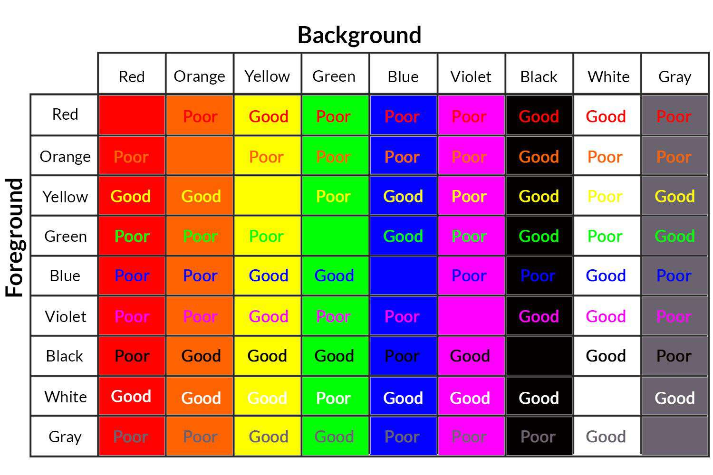

Proximity
Proximity, in a general sense, refers to the degree of closeness or nearness between two points, objects, or people. It's a concept used in various fields with slightly different implications depending on the context. In the field of visual design and psychology, proximity refers to how close or far apart elements are placed in a design. According to the Gestalt principles, elements that are close together are perceived as more related than elements that are spaced farther apart. This principle is used extensively in graphic design, user interface design, and architecture to organize information effectively. Overall, proximity is a versatile concept used across different disciplines to describe various types of closeness or connectedness, whether physical, social, psychological, or in design.

Color Contrast
Color contrast refers to the difference in color that makes objects distinguishable from each other and their background. In various fields like design, art, and vision science, color contrast is a crucial concept as it greatly affects the legibility, aesthetics, and visual effectiveness of an image or design. In design and accessibility, understanding and applying color contrast is vital. For instance, web and graphic designers use color contrast to make content more readable and visually appealing. In accessibility, sufficient color contrast is essential for users with visual impairments to access and interact with content effectively. Standards like the Web Content Accessibility Guidelines (WCAG) provide specific ratios for color contrast to ensure that text and interactive elements are easily discernible to users with visual impairments. These guidelines are particularly important for creating inclusive and accessible digital content.
Hick's Law
Hick's Law, also known as the Hick-Hyman Law, is a principle within the field of human-computer interaction and ergonomics. Named after British and American psychologists William Edmund Hick and Ray Hyman, this law suggests a specific relationship between the number of stimuli (or choices) presented to an individual and their reaction time to make a decision. Specifically, it states that the time it takes for a person to make a decision increases logarithmically with the number and complexity of choices. In practical terms, Hick's Law is often applied in areas like user interface design and ergonomics, suggesting that increasing the number of choices can lead to longer decision times and potentially overwhelm the user. It's a principle that helps designers understand the need for simplicity and clarity in presenting options to users.